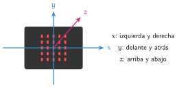
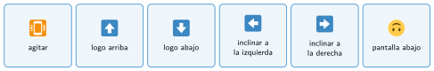

La brújula y el acelerómetro
🤔 Pienso5 min
Qué hago aquí: Piensa un momento y contesta con lo que ya sabes. No pasa nada si no lo sabes: es para empezar.
Sin mirar el móvil, señala dónde crees que está el norte. ¿Cómo lo has pensado?
📖 Leo y aprendo15 min
Qué hago aquí: Lee despacio, mira los dibujos y los ejemplos, y quédate con la idea clave del final.
La Micro:Bit tiene dos sensores muy útiles para los robots.
La primera vez, la placa pide calibrar: inclínala en todas las direcciones hasta llenar la pantalla.

MakeCode reconoce gestos: al agitar, logo arriba, pantalla abajo, inclinar a la izquierda…
Gestos que nota el acelerómetro (en Entrada, bloque al agitar):

✏️ Hago25 min
Qué hago aquí: Haz las actividades en orden. Empieza siempre por las básicas.
Escribe norte, sur, este u oeste.
| Brújula | 0 | 90 | 180 | 270 |
| Dirección |
|---|
Muestra la dirección de la brújula en la pantalla. Gira la placa hasta que marque 0. ¿Hacia dónde apunta?
Programa el dado electrónico. Lánzalo 10 veces y apunta los números.
Escribe dos gestos que reconoce el acelerómetro.
Muestra aceleración (mg) x en para siempre. ¿Qué número sale con la placa plana? ¿Y inclinada a cada lado?
✏️ Puedes responder escribiendo, con un dibujo o un esquema, o contándolo en voz alta.
🚀 Amplío (si quieres saber más)
Qué hago aquí: ¿Has terminado? Lee la curiosidad o elige el reto. Es voluntario.
Haz un podómetro. Cada vez que agitas la placa, la variable pasos sube 1. Átala al tobillo y camina 20 pasos. ¿Cuenta bien?
✅ Compruebo5 min
Qué hago aquí: Contesta sin mirar la ficha y marca cómo lo llevas.